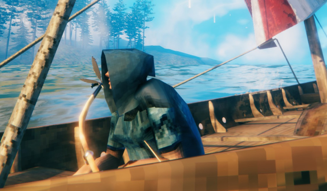
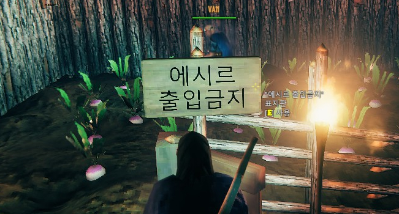

Valheim : Four Warriors
VAN

발헤임의 플레이어블 캐릭터 중 하나. 플레이어는 반야비. 주 무기는 철퇴와 방패, 그리고 활.
어느 한쪽에 특화되어 있기 보단 두루두루 컨텐츠를 즐기는 멀티형 캐릭터.
거점 운영에 대한 안목이 넓어 24시간이 모자란 편. 팀의 전체적인 운영 방향을 조율해준다.
당근과 순무 씨앗에 각별한 애정을 품고 있다.

실수로 밭을 부셔버렸던 에시르에게 강한 적대감을 가지고 있다.